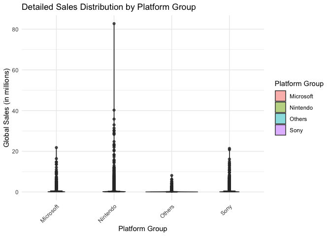
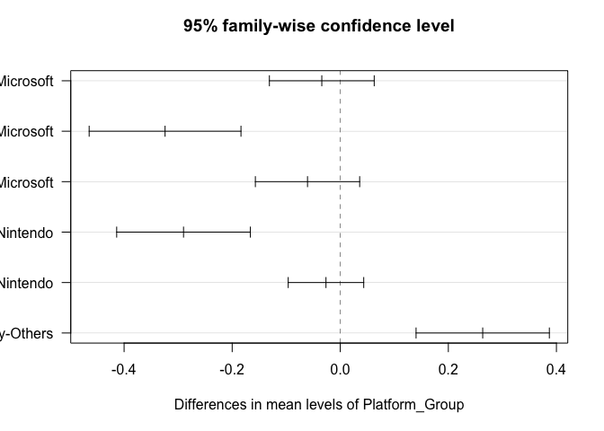
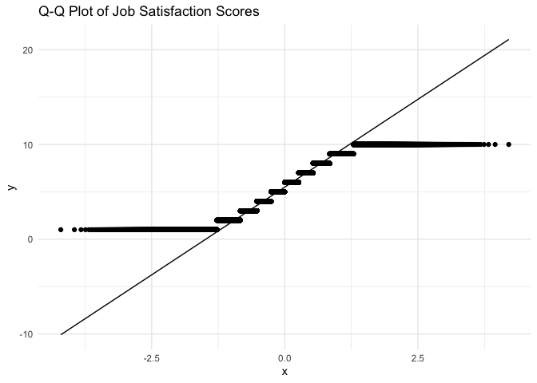

In User Experience (UX) Design, data analysis is a crucial tool for understanding user behavior, optimizing product experiences, and making informed design decisions. This research note introduces three core statistical methods—ANOVA (Analysis of Variance), Chi-Square Test, and Multiple Regression—and how they help UX researchers and product teams make data-driven decisions.
ANOVA analyzes video game market sales data to explore how different gaming platforms influence user purchasing decisions. This is analogous to studying how different product platforms or interface versions impact user behavior in UX research.
Chi-Square Test examines the relationship between different career backgrounds (STEM vs. Non-STEM) and job satisfaction, similar to analyzing user preferences and decision-making factors in UX research. For example, it can be used to explore differences in user satisfaction across different user groups based on product features or interface changes.
Multiple Regression analyzes U.S. housing price data, comparing the impact of different variables on pricing. This mirrors how multiple factors influence UX metrics such as user retention, conversion rates, or satisfaction levels, demonstrating how data can be leveraged to optimize the user experience.
By applying these statistical methods, UX professionals can gain deeper insights into user behavior, validate design decisions with empirical evidence, and ultimately create more effective and user-centered products.
In User Experience (UX) Design, a product's success depends not only on its interface and interaction design but also on platform selection. Different gaming platforms (e.g., PlayStation, Xbox, Nintendo Switch, PC) influence user purchasing decisions, playtime, and overall experience. Therefore, UX researchers and product managers need data-driven insights to understand user behavior patterns when developing cross-platform product strategies.
This study applies ANOVA (One-Way Analysis of Variance) to analyze the impact of gaming platforms on global video game sales and explores the following questions:
dataset: Global Video Game Sales source link: https://www.kaggle.com/datasets/thedevastator/global-video-game-sales file: 1_Global_Video_Sales.csv
The goal of my analysis is to compare three main platforms and one group for other platforms, to finally find the influence from different platforms to the sales performance of videos games.
This goal in a word is: Do different gaming platforms significantly affect the sales performance of video games? If so, which platforms show notably different performance levels?
First, load the environment:
# Clear environment
rm(list = ls())
# Basic package loading with suppressed warnings
suppressPackageStartupMessages({
library(tidyverse)
library(car)
library(agricolae)
})
knitr::opts_chunk$set(echo = TRUE)
Now read the dataset:
# Read the dataset
video_games <- read.csv("1_Global_Video_Sales.csv")
# Look at the data structure
str(video_games)
## 'data.frame': 16598 obs. of 11 variables:
## $ Rank : int 1 2 3 4 5 6 7 8 9 10 ...
## $ Name : chr "Wii Sports" "Super Mario Bros." "Mario Kart Wii" "Wii Sports Resort" ...
## $ Platform : chr "Wii" "NES" "Wii" "Wii" ...
## $ Year : chr "2006" "1985" "2008" "2009" ...
## $ Genre : chr "Sports" "Platform" "Racing" "Sports" ...
## $ Publisher : chr "Nintendo" "Nintendo" "Nintendo" "Nintendo" ...
## $ NA_Sales : num 41.5 29.1 15.8 15.8 11.3 ...
## $ EU_Sales : num 29.02 3.58 12.88 11.01 8.89 ...
## $ JP_Sales : num 3.77 6.81 3.79 3.28 10.22 ...
## $ Other_Sales : num 8.46 0.77 3.31 2.96 1 0.58 2.9 2.85 2.26 0.47 ...
## $ Global_Sales: num 82.7 40.2 35.8 33 31.4 ...
# Show ALL platforms and their frequencies
print("All platforms and their frequencies:")
## [1] "All platforms and their frequencies:"
sort(table(video_games$Platform), decreasing = TRUE)
##
## DS PS2 PS3 Wii X360 PSP PS PC XB GBA GC 3DS PSV PS4 N64 SNES XOne SAT WiiU 2600 GB NES DC GEN NG SCD WS 3DO TG16 GG PCFX
## 2163 2161 1329 1325 1265 1213 1196 960 824 822 556 509 413 336 319 239 213 173 143 133 98 98 52 27 12 6 6 3 2 1 1
# Count total number of unique platforms
cat("\nTotal number of unique platforms:", length(unique(video_games$Platform)))
##
## Total number of unique platforms: 31
So now I will divide them into four groups:
# Create platform groups
video_games$Platform_Group <- case_when(
video_games$Platform %in% c("PS", "PS2", "PS3", "PS4", "PSP", "PSV") ~ "Sony",
video_games$Platform %in% c("Wii", "WiiU", "NES", "SNES", "N64", "GC", "GB", "GBA", "DS", "3DS", "2600", "NS") ~ "Nintendo",
video_games$Platform %in% c("XB", "X360", "XOne") ~ "Microsoft",
TRUE ~ "Others"
)
# Check the grouping results
group_summary <- video_games %>%
group_by(Platform_Group) %>%
summarise(
n_games = n(),
platforms = list(unique(Platform))
)
print(group_summary)
Now the data will be cleaned and only keep necessary variables. The NA values will be eliminated.
# Select only necessary variables and remove NA values
clean_data <- video_games %>%
select(Platform_Group, Global_Sales) %>%
na.omit()
# Show summary statistics for each group
summary_stats <- clean_data %>%
group_by(Platform_Group) %>%
summarise(
count = n(),
mean_sales = mean(Global_Sales),
sd_sales = sd(Global_Sales),
median_sales = median(Global_Sales),
min_sales = min(Global_Sales),
max_sales = max(Global_Sales)
)
print(summary_stats)
Let’s see the descriptive data:
# 1. Boxplot for sales distribution
ggplot(clean_data, aes(x = Platform_Group, y = Global_Sales)) +
geom_boxplot(aes(fill = Platform_Group)) +
theme_minimal() +
labs(title = "Distribution of Global Sales by Platform Group",
x = "Platform Group",
y = "Global Sales (in millions)",
fill = "Platform Group") +
theme(axis.text.x = element_text(angle = 45, hjust = 1))
# 2. Violin plot combined with box plot for more detailed distribution
ggplot(clean_data, aes(x = Platform_Group, y = Global_Sales)) +
geom_violin(aes(fill = Platform_Group), alpha = 0.5) +
geom_boxplot(width = 0.2, alpha = 0.8) +
theme_minimal() +
labs(title = "Detailed Sales Distribution by Platform Group",
x = "Platform Group",
y = "Global Sales (in millions)",
fill = "Platform Group") +
theme(axis.text.x = element_text(angle = 45, hjust = 1))

From the graph, we can see some outliers. In this analysis, these outliers will not be eliminated because they are actual successful games.
Before ANOVA and HSD Analysis, it is necessary to check sevearal assumptions, including normality of data within each group and homogeneity of variance across groups.
# 1. Q-Q plots for checking normality
ggplot(clean_data, aes(sample = Global_Sales)) +
geom_qq() +
geom_qq_line() +
facet_wrap(~Platform_Group) +
theme_minimal() +
labs(title = "Q-Q Plots by Platform Group")
# 2. Shapiro-Wilk test with sampling
platforms <- unique(clean_data$Platform_Group)
for(p in platforms) {
cat("\nShapiro-Wilk normality test for", p, ":\n")
# Take a random sample of 5000 observations (or less if group is smaller)
subset_data <- clean_data$Global_Sales[clean_data$Platform_Group == p]
if(length(subset_data) > 5000) {
subset_data <- sample(subset_data, 5000)
}
print(shapiro.test(subset_data))
}
##
## Shapiro-Wilk normality test for Nintendo :
##
## Shapiro-Wilk normality test
##
## data: subset_data
## W = 0.19169, p-value < 2.2e-16
##
##
## Shapiro-Wilk normality test for Microsoft :
##
## Shapiro-Wilk normality test
##
## data: subset_data
## W = 0.40777, p-value < 2.2e-16
##
##
## Shapiro-Wilk normality test for Sony :
##
## Shapiro-Wilk normality test
##
## data: subset_data
## W = 0.45847, p-value < 2.2e-16
##
##
## Shapiro-Wilk normality test for Others :
##
## Shapiro-Wilk normality test
##
## data: subset_data
## W = 0.41055, p-value < 2.2e-16
# 3. Levene's test for homogeneity of variance
levene_test <- leveneTest(Global_Sales ~ Platform_Group, data = clean_data)
## Warning in leveneTest.default(y = y, group = group, ...): group coerced to factor.
print("\nLevene's Test for Homogeneity of Variance:")
## [1] "\nLevene's Test for Homogeneity of Variance:"
print(levene_test)
## Levene's Test for Homogeneity of Variance (center = median)
## Df F value Pr(>F)
## group 3 9.8157 1.826e-06 ***
## 16594
## ---
## Signif. codes: 0 '***' 0.001 '**' 0.01 '*' 0.05 '.' 0.1 ' ' 1
The Q-Q plots indicate that the sales data is not normally distributed in any platform group. This can be seen from the lines curving away from the diagonal, especially at the higher values. Nintendo’s data shows the strongest curve, meaning it has some very high-selling games that make the distribution uneven.
The Shapiro-Wilk test backs up what the Q-Q plots show are that the very small p-values (< 2.2e-16) shows the data is definitely not normal and this means sales don’t follow a bell-shaped curve in any platform group.
The Levene’s test shows a p-value much smaller than 0.05 (1.826e-06) This means the spread of sales numbers is different across platform groups and some groups have more varied sales figures than others.
These test results show that the data breaks the typical ANOVA rules. However, this is very common with sales data, where most games have low sales and a few games are huge hits.
Therefore, the analysis can still continue because the sample size is very large (16594 games), and this kind of uneven pattern is normal for sales data.
First, the one-way ANOVA test can see if there are any differences between platform groups:
# Perform one-way ANOVA
sales_anova <- aov(Global_Sales ~ Platform_Group, data = clean_data)
summary(sales_anova)
## Df Sum Sq Mean Sq F value Pr(>F)
## Platform_Group 3 99 33.09 13.72 6.23e-09 ***
## Residuals 16594 40034 2.41
## ---
## Signif. codes: 0 '***' 0.001 '**' 0.01 '*' 0.05 '.' 0.1 ' ' 1
According to the results, the p-value is much smaller than 0.05, and the F value is 13.72.
The result means there are significant differences in sales between platform groups. Different gaming platforms lead to different sales performance. However, this test doesn’t tell us which platforms are different from each other, and we need to do the Tukey HSD test next, to see exactly which platforms differ from each other
# Perform Tukey's HSD test
tukey_results <- TukeyHSD(sales_anova)
print(tukey_results)
## Tukey multiple comparisons of means
## 95% family-wise confidence level
##
## Fit: aov(formula = Global_Sales ~ Platform_Group, data = clean_data)
##
## $Platform_Group
## diff lwr upr p adj
## Nintendo-Microsoft -0.03415267 -0.13113111 0.06282577 0.8022776
## Others-Microsoft -0.32418606 -0.46465265 -0.18371946 0.0000000
## Sony-Microsoft -0.06059043 -0.15709914 0.03591828 0.3711809
## Others-Nintendo -0.29003338 -0.41372264 -0.16634413 0.0000000
## Sony-Nintendo -0.02643776 -0.09630977 0.04343425 0.7653354
## Sony-Others 0.26359562 0.14027432 0.38691693 0.0000003
# Visualize Tukey's results
plot(tukey_results, las = 1)

From the results:
Sony vs Others shows the most significant difference: (1) A positive difference (0.2635) indicates higher sales for Sony (2) Very small p-value (0.0000003) confirms this difference is significant (3) This suggests Sony platforms generally achieve better sales than the ‘Others’ category
Others vs Microsoft and Others vs Nintendo: (1) Both show negative differences (-0.3241 and -0.2900 respectively) (2) Both have very small p-values (p < 0.05) (3) This indicates the ‘Others’ category has significantly lower sales than both Microsoft and Nintendo platforms
Comparisons between major platforms (Sony, Nintendo, Microsoft): (1) Nintendo vs Microsoft: Small difference (-0.0341) with high p-value (0.8022) (2) Sony vs Microsoft: Small difference (-0.0605) with high p-value (0.3711) (3) Sony vs Nintendo: Small difference (-0.0264) with high p-value (0.7653) (4) None of these differences are statistically significant, suggesting similar sales performance among the major gaming platforms
The visualization through the confidence intervals plot confirms these findings: (1) Intervals crossing zero indicate non-significant differences between platform pairs (2) Major gaming platforms (Sony, Microsoft, Nintendo) perform similarly in terms of sales (3) All major platforms significantly outperform the ‘Others’ category
The analysis shows that the choice of gaming platform does affect how well video games sell. This was proven by the ANOVA test results showing a p-value less than 0.05 and F-value of 13.72.
Looking deeper with the Tukey HSD test, it turns out that games sell about equally well on Sony, Nintendo, and Microsoft platforms. There isn’t much difference between these big three. But games on other smaller platforms tend to sell much less, with Sony performing the best when compared to these smaller platforms.
This means game developers can expect similar sales whether they release their game on PlayStation, Xbox, or Nintendo. But if they only release their game on smaller platforms, they might not sell as many copies.
For example, think about a popular game like “Minecraft”. It sells well across PlayStation, Xbox, and Nintendo Switch because these platforms have large player bases and strong marketing. But if Minecraft was only released on a smaller platform like the Ouya (a less successful gaming console), it likely wouldn’t reach nearly as many players or achieve the same sales numbers, even if it was exactly the same game.
This analysis reinforces the importance of data-driven UX strategies when designing for different gaming platforms. By understanding platform influence on user engagement and sales, UX designers can create more engaging, accessible, and successful gaming experiences tailored to different ecosystems.
From a UX design perspective, the findings highlight important considerations for designing cross-platform experiences. Since the ANOVA and Tukey HSD analysis indicate that Sony, Nintendo, and Microsoft platforms show similar sales performance, while smaller platforms generally have lower sales, UX designers and product managers can use these insights to inform strategic decisions:
Since PlayStation, Xbox, and Nintendo platforms achieve similar sales performance, it is crucial for UX designers to ensure a consistent and high-quality experience across these major platforms.
Games should be optimized to take advantage of each platform’s unique UI elements, controller layout, and system capabilities, while maintaining a unified experience for players.
With similar sales across major platforms, developers should focus on designing intuitive cross-platform interactions, especially for multiplayer and social gaming experiences.
Features like cross-platform save data, shared player accounts, and unified UI elements can enhance user engagement and retention.
The significant sales gap between major and minor platforms suggests that games designed for smaller platforms may require UX adjustments to compensate for hardware limitations or different interaction models.
UX designers should simplify UI complexity, optimize performance, and ensure accessibility features to accommodate platform constraints.
While sales performance is similar across PlayStation, Xbox, and Nintendo, each platform has different user engagement patterns.
Example considerations for UX design:
Since major platforms show similar sales, UX teams should explore how different platform ecosystems impact in-game purchases and user engagement.
Subscription models (e.g., Game Pass, PlayStation Plus, Nintendo Switch Online) provide additional revenue opportunities, and UX should streamline access to digital content while minimizing friction.
In career planning and UX research related to workplace experience, job satisfaction is a key factor influencing long-term employee engagement and retention. Many people assume that certain fields, such as STEM (Science, Technology, Engineering, and Mathematics), offer better career satisfaction compared to Non-STEM fields (Arts, Business, Law, etc.). However, is this assumption backed by data?
This study uses Chi-Square analysis to examine whether there is a significant relationship between a person’s field of study (STEM vs. Non-STEM) and their job satisfaction levels. Specifically, the analysis will address the following questions:
Does choosing a STEM or Non-STEM field significantly influence job satisfaction? Do STEM graduates experience higher or lower satisfaction compared to Non-STEM graduates? How can this insight help UX designers improve career guidance platforms and workplace user experience? By analyzing a dataset containing 38,444 individuals' career paths, this research will determine whether field of study has a meaningful impact on career satisfaction or if other factors play a more significant role.
dataset：Field Of Study vs Occupation https://www.kaggle.com/datasets/jahnavipaliwal/field-of-study-vs-occupation file: 2_Major_Satisfaction.csv
Let’s first look at our data structure:
# Clear environment and load packages
rm(list = ls())
library(tidyverse)
# Read the dataset
career_data <- read.csv("2_Major_Satisfaction.csv")
# Show data structure
str(career_data)
## 'data.frame': 38444 obs. of 23 variables:
## $ Field.of.Study : chr "Medicine" "Education" "Education" "Education" ...
## $ Current.Occupation : chr "Business Analyst" "Economist" "Biologist" "Business Analyst" ...
## $ Age : int 48 44 21 33 28 56 51 58 31 30 ...
## $ Gender : chr "Male" "Male" "Female" "Male" ...
## $ Years.of.Experience : int 7 26 27 14 0 39 29 32 38 16 ...
## $ Education.Level : chr "High School" "Master's" "Master's" "PhD" ...
## $ Industry.Growth.Rate : chr "High" "Low" "Low" "Medium" ...
## $ Job.Satisfaction : int 7 10 8 7 3 3 7 9 1 8 ...
## $ Work.Life.Balance : int 10 3 3 9 1 1 4 4 5 5 ...
## $ Job.Opportunities : int 83 55 78 62 8 99 13 77 56 98 ...
## $ Salary : int 198266 96803 65920 85591 43986 143252 92623 85016 123264 119045 ...
## $ Job.Security : int 8 9 4 5 3 3 7 3 1 1 ...
## $ Career.Change.Interest : int 0 0 0 0 0 0 0 0 1 0 ...
## $ Skills.Gap : int 8 3 4 2 5 10 6 8 6 6 ...
## $ Family.Influence : chr "High" "Medium" "Low" "Medium" ...
## $ Mentorship.Available : int 0 0 0 1 0 1 1 0 0 0 ...
## $ Certifications : int 0 0 0 0 0 0 1 0 1 0 ...
## $ Freelancing.Experience : int 0 1 0 0 1 0 0 0 0 0 ...
## $ Geographic.Mobility : int 1 1 0 0 0 0 1 0 0 0 ...
## $ Professional.Networks : int 2 2 2 9 2 10 4 6 10 3 ...
## $ Career.Change.Events : int 0 1 1 0 0 0 1 0 1 2 ...
## $ Technology.Adoption : int 1 9 2 1 7 3 10 4 7 3 ...
## $ Likely.to.Change.Occupation: int 0 0 0 0 1 1 0 0 1 0 ...
# Show unique fields and their frequencies
print("Fields of Study and their frequencies:")
## [1] "Fields of Study and their frequencies:"
sort(table(career_data$Field.of.Study), decreasing = TRUE)
##
## Medicine Biology Business Education Mechanical Engineering Law Computer Science
## 3949 3921 3921 3896 3875 3851 3826
## Arts Economics Psychology
## 3763 3743 3699
# Show job satisfaction distribution
print("\nJob Satisfaction distribution:")
## [1] "\nJob Satisfaction distribution:"
table(career_data$Job.Satisfaction)
##
## 1 2 3 4 5 6 7 8 9 10
## 3898 3870 3777 3794 3870 3971 3827 3785 3865 3787
We can see there are many meaningful variables, and this dataset can be used in many different analysis. Overall, the dataset contains over 38,000 individuals’ career paths data, including fields of study, job satisfaction, and other informations.
In this section, I will focus on the field of study and job satisfaction.
I will categorize the 10 fields into two broader categories: (1) STEM (Science, Technology, Engineering, Mathematics) (2) Non-STEM (Arts, Business, Law, etc.)
And I will group the Job Satisfaction from 1-10 scale into three levels: (1) Low Satisfaction (1-3) (2) Medium Satisfaction (4-7) (3) High Satisfaction (8-10)
My analysis goal is to examine whether there is a significant association between field category (STEM vs Non-STEM) and job satisfaction levels.
First, clean the data:
# Check for missing values
print("Checking for missing values:")
## [1] "Checking for missing values:"
colSums(is.na(career_data[c("Field.of.Study", "Job.Satisfaction")]))
## Field.of.Study Job.Satisfaction
## 0 0
# Check for unique values in Field of Study
print("\nUnique values in Field.of.Study:")
## [1] "\nUnique values in Field.of.Study:"
unique(career_data$Field.of.Study)
## [1] "Medicine" "Education" "Arts" "Computer Science" "Business" "Mechanical Engineering" "Biology"
## [8] "Law" "Economics" "Psychology"
# Check for unique values and range in Job.Satisfaction
print("\nUnique values in Job.Satisfaction:")
## [1] "\nUnique values in Job.Satisfaction:"
sort(unique(career_data$Job.Satisfaction))
## [1] 1 2 3 4 5 6 7 8 9 10
# Basic summary statistics for Job.Satisfaction
print("\nSummary statistics for Job.Satisfaction:")
## [1] "\nSummary statistics for Job.Satisfaction:"
summary(career_data$Job.Satisfaction)
## Min. 1st Qu. Median Mean 3rd Qu. Max.
## 1.00 3.00 6.00 5.49 8.00 10.00
# Check for frequencies of Job.Satisfaction
print("\nFrequency table for Job.Satisfaction:")
## [1] "\nFrequency table for Job.Satisfaction:"
table(career_data$Job.Satisfaction)
##
## 1 2 3 4 5 6 7 8 9 10
## 3898 3870 3777 3794 3870 3971 3827 3785 3865 3787
It shows the values are all normal, no values missing or strange!
Then, make the data into different groups:
# Create field categories
career_clean <- career_data %>%
mutate(
Field_Category = case_when(
Field.of.Study %in% c("Computer Science", "Medicine", "Biology", "Mechanical Engineering") ~ "STEM",
TRUE ~ "Non-STEM"
),
Satisfaction_Level = case_when(
Job.Satisfaction <= 3 ~ "Low",
Job.Satisfaction <= 7 ~ "Medium",
TRUE ~ "High"
) %>%
factor(levels = c("Low", "Medium", "High"))
)
# Check the distribution of our new categories
print("Distribution of Field Categories:")
## [1] "Distribution of Field Categories:"
table(career_clean$Field_Category)
##
## Non-STEM STEM
## 22873 15571
print("\nDistribution of Satisfaction Levels:")
## [1] "\nDistribution of Satisfaction Levels:"
table(career_clean$Satisfaction_Level)
##
## Low Medium High
## 11545 15462 11437
print("\nCross-tabulation of Field Category and Satisfaction:")
## [1] "\nCross-tabulation of Field Category and Satisfaction:"
table(career_clean$Field_Category, career_clean$Satisfaction_Level)
##
## Low Medium High
## Non-STEM 6787 9284 6802
## STEM 4758 6178 4635
# Create visualization
ggplot(career_clean, aes(x = Field_Category, fill = Satisfaction_Level)) +
geom_bar(position = "fill") +
theme_minimal() +
labs(title = "Job Satisfaction Distribution by Field Category",
x = "Field Category",
y = "Proportion",
fill = "Satisfaction Level") +
scale_y_continuous(labels = scales::percent)
After cleaning and examining the data, now we got two variables and three levels to furthermore analysis:
Field Categories: (1) STEM (15,571 individuals): Including Computer Science, Medicine, Biology, and Mechanical Engineering (2) Non-STEM (22,873 individuals): Including Arts, Business, Law, Economics, Education, and Psychology
Job Satisfaction Levels: (1) Low (11,545 individuals): Satisfaction scores 1-3 (2) Medium (15,462 individuals): Satisfaction scores 4-7 (3) High (11,437 individuals): Satisfaction scores 8-10
The bar chart visualization demonstrates that both STEM and Non-STEM fields have similar proportional distributions of satisfaction levels, with medium satisfaction being the most common in both categories. This initial visual inspection suggests that the relationship between field category and satisfaction levels might be minimal, but to see more precise, it needs to conduct a formal Chi-square test to determine if any observed differences are statistically significant.
First, let’s examine the normality of our Job Satisfaction data:
# 1. Create Q-Q plot for Job Satisfaction
ggplot(career_clean, aes(sample = Job.Satisfaction)) +
stat_qq() +
stat_qq_line() +
theme_minimal() +
labs(title = "Q-Q Plot of Job Satisfaction Scores")

# 2. Create histogram with density curve
ggplot(career_clean, aes(x = Job.Satisfaction)) +
geom_histogram(aes(y = ..density..), bins = 30, fill = "lightblue", color = "black") +
geom_density(color = "red") +
theme_minimal() +
labs(title = "Distribution of Job Satisfaction Scores",
x = "Job Satisfaction",
y = "Density")
# 3. Shapiro-Wilk test for normality (using a random sample of 5000 observations)
set.seed(123) # for reproducibility
sample_data <- career_clean %>%
slice_sample(n = 5000) %>%
pull(Job.Satisfaction)
shapiro_test <- shapiro.test(sample_data)
print("Shapiro-Wilk normality test (on random sample of 5000 observations):")
## [1] "Shapiro-Wilk normality test (on random sample of 5000 observations):"
print(shapiro_test)
##
## Shapiro-Wilk normality test
##
## data: sample_data
## W = 0.9367, p-value < 2.2e-16
Above shows the normality analysis results that the data is not normal distribution.
However, for Chi-square analysis, normality is not a requirement.
From previous steps, the dataset represents adequate cell frequencies and all cells have frequencies well above the minimum requirement of Chi Square Analysis.
Use the Chi-square test to examine the relationship between Field Category and Satisfaction Level:
# Perform Chi-square test
chi_test <- chisq.test(table(career_clean$Field_Category, career_clean$Satisfaction_Level))
# Display test results
print("Chi-square test results:")
## [1] "Chi-square test results:"
print(chi_test)
##
## Pearson's Chi-squared test
##
## data: table(career_clean$Field_Category, career_clean$Satisfaction_Level)
## X-squared = 4.3349, df = 2, p-value = 0.1145
# Show the contribution of each cell to the chi-square statistic
print("\nContribution of each cell to chi-square:")
## [1] "\nContribution of each cell to chi-square:"
print(round(chi_test$residuals^2, 3))
##
## Low Medium High
## Non-STEM 0.977 0.778 0.001
## STEM 1.435 1.142 0.002
# Calculate Cramer's V for effect size
library(effectsize)
cramer_v <- cramers_v(table(career_clean$Field_Category, career_clean$Satisfaction_Level))
print("\nCramer's V effect size:")
## [1] "\nCramer's V effect size:"
print(cramer_v)
## Cramer's V (adj.) | 95% CI
## --------------------------------
## 7.79e-03 | [0.00, 1.00]
##
## - One-sided CIs: upper bound fixed at [1.00].
From the results, it can be summarized as:
Since the p-value (0.1145) is greater than the conventional significance level of 0.05, we fail to reject the null hypothesis. This means there is no statistically significant association between Field Category (STEM/Non-STEM) and Job Satisfaction levels.
Cell contributions show how much each cell contributes to the overall chi-square statistic. The larger numbers in STEM/Low and STEM/Medium suggest these cells have the largest differences from expected frequencies, though not large enough to be significant.
Cramer’s V shows there is virtually no relationship between field category and satisfaction levels.
The data suggests that whether someone works in a STEM or Non-STEM field has no meaningful influence on their job satisfaction level. The satisfaction distributions are essentially the same across both field categories.
The analysis shows that the choice between STEM and Non-STEM fields does not significantly affect job satisfaction levels. This was demonstrated by the Chi-square test results showing a p-value of 0.1145 (greater than 0.05) and a very small Cramer’s V value of 0.00779.
Looking deeper at the cell contributions, while STEM fields showed slightly higher differences from expected frequencies in Low and Medium satisfaction levels (1.435 and 1.142 respectively), these differences were not statistically significant. Both STEM and Non-STEM fields demonstrated similar patterns of job satisfaction distribution.
This means that professionals can expect similar levels of job satisfaction whether they choose STEM or Non-STEM careers. The notion that one field category leads to higher job satisfaction than the other is not supported by the data.
For example, consider two graduates - one choosing Computer Science (STEM) and another choosing Business (Non-STEM). According to our analysis, neither graduate is more likely to experience higher job satisfaction based solely on their field choice.
The assumption that STEM careers lead to higher satisfaction is not supported by data. Instead of recommending career fields based on perceived satisfaction levels, UX designers should develop tools that empower individuals to make personalized, informed career decisions based on their unique preferences and goals.
From a UX design perspective, these findings have key implications for career planning platforms, job-matching applications, and employee experience strategies:
Since no significant difference in job satisfaction was found between STEM and Non-STEM careers, UX designers should focus on guiding users toward careers that align with their personal interests and work-life preferences rather than solely on industry trends.
Career platforms can personalize recommendations by prioritizing user preferences (e.g., creativity, stability, salary expectations) rather than pushing STEM careers as universally "better."
Since field choice does not strongly determine satisfaction, UX research should explore other key influences such as job flexibility, company culture, salary expectations, and work-life balance.
Career recommendation tools can integrate job satisfaction predictors that weigh multiple factors beyond just the industry category.
Employers and HR platforms should design workplace experiences that enhance engagement across all industries rather than assuming STEM jobs naturally lead to satisfaction.
Features like customized career development paths, mentorship programs, and work-life balance support can improve job satisfaction for all professionals.
Understanding the factors that influence house prices is crucial for real estate analysts, UX designers of property listing platforms, and homebuyers looking for valuable insights. Traditional indicators such as time on market (Days Pending) and market growth trends (Price Growth Rate) are commonly used to predict home values. However, do these metrics truly capture the key drivers of price variations, or are there more influential factors that should be considered?
This study uses multiple regression analysis to evaluate the impact of different variables on house prices. It compares two regression models to determine which factors provide the best predictions:
The key research questions are:
By evaluating these models, this analysis aims to uncover data-driven insights that can enhance housing market predictions and improve user experience in real estate applications.
dataset：US Housing Trends: Values, Time & Price Cuts https://www.kaggle.com/datasets/clovisdalmolinvieira/us-housing-trends-values-time-and-price-cuts
This dataset contains information about housing market trends in the United States, including various metrics related to house prices, property characteristics, and market dynamics. The analysis will focus on developing and comparing two multiple regression models to predict house prices: (1) A two-variable model using two key predictors of house prices (2) A three-variable model that adds an additional predictor to examine if it improves the model’s explanatory power
The primary goal is to: (1) Determine which factors most strongly influence house prices in the US market (2) Compare the effectiveness of a simpler two-variable model versus a more complex three-variable model (3) Assess whether adding a third variable significantly improves the model’s predictive power
First, examine the dataset structure and available variables:
# Clear environment
rm(list = ls())
# Basic package loading
library(tidyverse)
library(car)
library(corrplot) # for correlation analysis
library(performance) # for model diagnostics
knitr::opts_chunk$set(echo = TRUE)
# Read the dataset with error handling
housing_data <- read.csv("3_House_Price.csv")
# Show first few rows to understand the structure
head(housing_data)
# Show names
names(housing_data)
## [1] "RegionID" "SizeRank" "RegionName" "StateName" "X2018.02.HomeValue" "X2018.02.DaysPending" "X2018.02.CutRaw"
## [8] "X2018.03.HomeValue" "X2018.03.DaysPending" "X2018.03.CutRaw" "X2018.04.HomeValue" "X2018.04.DaysPending" "X2018.04.CutRaw" "X2018.05.HomeValue"
## [15] "X2018.05.DaysPending" "X2018.05.CutRaw" "X2018.06.HomeValue" "X2018.06.DaysPending" "X2018.06.CutRaw" "X2018.07.HomeValue" "X2018.07.DaysPending"
## [22] "X2018.07.CutRaw" "X2018.08.HomeValue" "X2018.08.DaysPending" "X2018.08.CutRaw" "X2018.09.HomeValue" "X2018.09.DaysPending" "X2018.09.CutRaw"
## [29] "X2018.10.HomeValue" "X2018.10.DaysPending" "X2018.10.CutRaw" "X2018.11.HomeValue" "X2018.11.DaysPending" "X2018.11.CutRaw" "X2018.12.HomeValue"
## [36] "X2018.12.DaysPending" "X2018.12.CutRaw" "X2019.01.HomeValue" "X2019.01.DaysPending" "X2019.01.CutRaw" "X2019.02.HomeValue" "X2019.02.DaysPending"
## [43] "X2019.02.CutRaw" "X2019.03.HomeValue" "X2019.03.DaysPending" "X2019.03.CutRaw" "X2019.04.HomeValue" "X2019.04.DaysPending" "X2019.04.CutRaw"
## [50] "X2019.05.HomeValue" "X2019.05.DaysPending" "X2019.05.CutRaw" "X2019.06.HomeValue" "X2019.06.DaysPending" "X2019.06.CutRaw" "X2019.07.HomeValue"
## [57] "X2019.07.DaysPending" "X2019.07.CutRaw" "X2019.08.HomeValue" "X2019.08.DaysPending" "X2019.08.CutRaw" "X2019.09.HomeValue" "X2019.09.DaysPending"
## [64] "X2019.09.CutRaw" "X2019.10.HomeValue" "X2019.10.DaysPending" "X2019.10.CutRaw" "X2019.11.HomeValue" "X2019.11.DaysPending" "X2019.11.CutRaw"
## [71] "X2019.12.HomeValue" "X2019.12.DaysPending" "X2019.12.CutRaw" "X2020.01.HomeValue" "X2020.01.DaysPending" "X2020.01.CutRaw" "X2020.02.HomeValue"
## [78] "X2020.02.DaysPending" "X2020.02.CutRaw" "X2020.03.HomeValue" "X2020.03.DaysPending" "X2020.03.CutRaw" "X2020.04.HomeValue" "X2020.04.DaysPending"
## [85] "X2020.04.CutRaw" "X2020.05.HomeValue" "X2020.05.DaysPending" "X2020.05.CutRaw" "X2020.06.HomeValue" "X2020.06.DaysPending" "X2020.06.CutRaw"
## [92] "X2020.07.HomeValue" "X2020.07.DaysPending" "X2020.07.CutRaw" "X2020.08.HomeValue" "X2020.08.DaysPending" "X2020.08.CutRaw" "X2020.09.HomeValue"
## [99] "X2020.09.DaysPending" "X2020.09.CutRaw" "X2020.10.HomeValue" "X2020.10.DaysPending" "X2020.10.CutRaw" "X2020.11.HomeValue" "X2020.11.DaysPending"
## [106] "X2020.11.CutRaw" "X2020.12.HomeValue" "X2020.12.DaysPending" "X2020.12.CutRaw" "X2021.01.HomeValue" "X2021.01.DaysPending" "X2021.01.CutRaw"
## [113] "X2021.02.HomeValue" "X2021.02.DaysPending" "X2021.02.CutRaw" "X2021.03.HomeValue" "X2021.03.DaysPending" "X2021.03.CutRaw" "X2021.04.HomeValue"
## [120] "X2021.04.DaysPending" "X2021.04.CutRaw" "X2021.05.HomeValue" "X2021.05.DaysPending" "X2021.05.CutRaw" "X2021.06.HomeValue" "X2021.06.DaysPending"
## [127] "X2021.06.CutRaw" "X2021.07.HomeValue" "X2021.07.DaysPending" "X2021.07.CutRaw" "X2021.08.HomeValue" "X2021.08.DaysPending" "X2021.08.CutRaw"
## [134] "X2021.09.HomeValue" "X2021.09.DaysPending" "X2021.09.CutRaw" "X2021.10.HomeValue" "X2021.10.DaysPending" "X2021.10.CutRaw" "X2021.11.HomeValue"
## [141] "X2021.11.DaysPending" "X2021.11.CutRaw" "X2021.12.HomeValue" "X2021.12.DaysPending" "X2021.12.CutRaw" "X2022.01.HomeValue" "X2022.01.DaysPending"
## [148] "X2022.01.CutRaw" "X2022.02.HomeValue" "X2022.02.DaysPending" "X2022.02.CutRaw" "X2022.03.HomeValue" "X2022.03.DaysPending" "X2022.03.CutRaw"
## [155] "X2022.04.HomeValue" "X2022.04.DaysPending" "X2022.04.CutRaw" "X2022.05.HomeValue" "X2022.05.DaysPending" "X2022.05.CutRaw" "X2022.06.HomeValue"
## [162] "X2022.06.DaysPending" "X2022.06.CutRaw" "X2022.07.HomeValue" "X2022.07.DaysPending" "X2022.07.CutRaw" "X2022.08.HomeValue" "X2022.08.DaysPending"
## [169] "X2022.08.CutRaw" "X2022.09.HomeValue" "X2022.09.DaysPending" "X2022.09.CutRaw" "X2022.10.HomeValue" "X2022.10.DaysPending" "X2022.10.CutRaw"
## [176] "X2022.11.HomeValue" "X2022.11.DaysPending" "X2022.11.CutRaw" "X2022.12.HomeValue" "X2022.12.DaysPending" "X2022.12.CutRaw" "X2023.01.HomeValue"
## [183] "X2023.01.DaysPending" "X2023.01.CutRaw" "X2023.02.HomeValue" "X2023.02.DaysPending" "X2023.02.CutRaw" "X2023.03.HomeValue" "X2023.03.DaysPending"
## [190] "X2023.03.CutRaw" "X2023.04.HomeValue" "X2023.04.DaysPending" "X2023.04.CutRaw" "X2023.05.HomeValue" "X2023.05.DaysPending" "X2023.05.CutRaw"
## [197] "X2023.06.HomeValue" "X2023.06.DaysPending" "X2023.06.CutRaw" "X2023.07.HomeValue" "X2023.07.DaysPending" "X2023.07.CutRaw" "X2023.08.HomeValue"
## [204] "X2023.08.DaysPending" "X2023.08.CutRaw" "X2023.09.HomeValue" "X2023.09.DaysPending" "X2023.09.CutRaw" "X2023.10.HomeValue" "X2023.10.DaysPending"
## [211] "X2023.10.CutRaw" "X2023.11.HomeValue" "X2023.11.DaysPending" "X2023.11.CutRaw" "X2023.12.HomeValue" "X2023.12.DaysPending" "X2023.12.CutRaw"
## [218] "X2024.01.HomeValue" "X2024.01.DaysPending" "X2024.01.CutRaw" "X2024.02.HomeValue" "X2024.02.DaysPending" "X2024.02.CutRaw" "X2024.03.HomeValue"
## [225] "X2024.03.DaysPending" "X2024.03.CutRaw" "X2024.04.HomeValue" "X2024.04.DaysPending" "X2024.04.CutRaw" "X2024.05.HomeValue" "X2024.05.DaysPending"
## [232] "X2024.05.CutRaw"
From above rows examination, the dataset contains various variables tracked over time (2018-2024), includes 895 observations with multiple variables for each region, including Basic Information such as RegionID, RegionName, StateName, SizeRank, etc; and Time Series Variables (tracked monthly) such as HomeValue, DaysPending, CutRaw, etc.
Following these data, in 3-2 section, I will choose two groups with 2 and 3 separately for multiple regression.
The analysis goal is to compare two-variable model and three-variable model to predict house values using key market indicators. Also, compare the effectiveness of both models to understand the impact of adding an additional predictor.
First, clean the dataset, because the dataset contains massive time series data. Use cleaned data to find and think variables selection. The data needs preprocessing to create meaningful metrics from the time series. The following code transforms raw time series data into analytical variables:
# Data Preprocessing
housing_analysis <- housing_data %>%
rowwise() %>%
mutate(
# Average home value (12-month rolling)
Avg_HomeValue = mean(c_across(matches("2023\\.(0[1-9]|1[0-2])\\.HomeValue")), na.rm = TRUE),
# Price growth rate (YoY change)
Price_Growth = ((last(c_across(matches("\\.HomeValue"))) -
first(c_across(matches("\\.HomeValue")))) /
first(c_across(matches("\\.HomeValue"))) * 100),
# Average days pending (6-month rolling)
Days_Pending_Avg = mean(c_across(matches("2023\\.(0[7-9]|1[0-2])\\.DaysPending")), na.rm = TRUE),
# Price cut frequency (6-month rolling)
Price_Cut_Freq = mean(c_across(matches("2023\\.(0[7-9]|1[0-2])\\.CutRaw")), na.rm = TRUE)
) %>%
ungroup()
Second, the transformed data requires cleaning and variable selection. The code below selects relevant variables and removes missing values:
# 2. Clean and select variables
housing_clean <- housing_analysis %>%
select(
RegionID, RegionName, StateName,
Avg_HomeValue, Price_Growth, Days_Pending_Avg, Price_Cut_Freq
) %>%
drop_na()
Third, outlier detection is performed using the Interquartile Range (IQR) method:
# 3. Outlier detection
identify_outliers <- function(x) {
Q1 <- quantile(x, 0.25)
Q3 <- quantile(x, 0.75)
IQR <- Q3 - Q1
lower_bound <- Q1 - 1.5 * IQR
upper_bound <- Q3 + 1.5 * IQR
return(x < lower_bound | x > upper_bound)
}
housing_clean <- housing_clean %>%
mutate(across(c(Avg_HomeValue, Price_Growth, Days_Pending_Avg, Price_Cut_Freq),
list(outlier = ~identify_outliers(.))))
Fourth, the variables need standardization to ensure comparability:
# 4. Variable standardization
housing_clean <- housing_clean %>%
mutate(across(c(Avg_HomeValue, Price_Growth, Days_Pending_Avg, Price_Cut_Freq),
~scale(.) %>% as.vector(),
.names = "{.col}_scaled"))
Fifth, the data is separated into two model datasets for comparison:
# 5. Model datasets preparation
# Model 1: Two-variable model
model1_data <- housing_clean %>%
select(
Avg_HomeValue_scaled, # Dependent variable
Days_Pending_Avg_scaled, # Market efficiency indicator
Price_Growth_scaled # Market trend indicator
)
# Model 2: Three-variable model
model2_data <- housing_clean %>%
select(
Avg_HomeValue_scaled, # Dependent variable
Days_Pending_Avg_scaled, # Market efficiency
Price_Growth_scaled, # Market trend
Price_Cut_Freq_scaled # Market pressure indicator
)
Finally, summary statistics and correlation analysis are generated to understand variable relationships:
# 6. Summary statistics
summary_stats <- housing_clean %>%
summarise(across(c(Avg_HomeValue, Price_Growth, Days_Pending_Avg, Price_Cut_Freq),
list(
mean = ~mean(., na.rm = TRUE),
sd = ~sd(., na.rm = TRUE),
min = ~min(., na.rm = TRUE),
max = ~max(., na.rm = TRUE)
)))
print("Summary Statistics:")
## [1] "Summary Statistics:"
print(summary_stats)
# 7. Correlation analysis
correlation_matrix <- cor(model2_data, use = "complete.obs")
print("\nCorrelation Matrix:")
## [1] "\nCorrelation Matrix:"
print(correlation_matrix)
## Avg_HomeValue_scaled Days_Pending_Avg_scaled Price_Growth_scaled Price_Cut_Freq_scaled
## Avg_HomeValue_scaled 1.00000000 0.09594784 0.10551159 0.86966276
## Days_Pending_Avg_scaled 0.09594784 1.00000000 0.08635531 0.14206897
## Price_Growth_scaled 0.10551159 0.08635531 1.00000000 0.08044456
## Price_Cut_Freq_scaled 0.86966276 0.14206897 0.08044456 1.00000000
According to the cleaned data, The variables selected for the regression models are:
Model 1 (Two-variable model): Dependent Variable: Average Home Value (12-month rolling average) Independent Variables: Days Pending Average (market efficiency indicator) Price Growth Rate (market trend indicator)
Model 2 (Three-variable model): Dependent Variable: Average Home Value (12-month rolling average) Independent Variables: Days Pending Average (market efficiency indicator) Price Growth Rate (market trend indicator) Price Cut Frequency (market pressure indicator)
These variables were selected based on their economic significance and temporal stability. The rolling averages help reduce noise in the data, while the year-over-year growth rate captures long-term market trends. The addition of price cut frequency in Model 2 introduces a market sentiment indicator to test whether it improves the model’s explanatory power.
Overall, the function can be used as:
Model 1: HomeValue = β₀ + β₁(Days_Pending_Avg) + β₂(Price_Growth) + ε
Model 2: HomeValue = β₀ + β₁(Days_Pending_Avg) + β₂(Price_Growth) + β₃(Price_Cut_Freq) + ε
First, the normality of variables needs to be checked using both visual and statistical methods. The analysis includes histogram plots, Q-Q plots, and Shapiro-Wilk tests for each variable:
# Visual normality check
# Create histograms with density curves
par(mfrow=c(2,2))
# Histogram for Avg_HomeValue
hist(housing_clean$Avg_HomeValue_scaled,
main="Distribution of Average Home Value",
xlab="Standardized Average Home Value",
probability=TRUE)
lines(density(housing_clean$Avg_HomeValue_scaled), col="blue")
# Histogram for Days Pending
hist(housing_clean$Days_Pending_Avg_scaled,
main="Distribution of Days Pending",
xlab="Standardized Days Pending",
probability=TRUE)
lines(density(housing_clean$Days_Pending_Avg_scaled), col="blue")
# Histogram for Price Growth
hist(housing_clean$Price_Growth_scaled,
main="Distribution of Price Growth",
xlab="Standardized Price Growth",
probability=TRUE)
lines(density(housing_clean$Price_Growth_scaled), col="blue")
# Histogram for Price Cut Frequency
hist(housing_clean$Price_Cut_Freq_scaled,
main="Distribution of Price Cut Frequency",
xlab="Standardized Price Cut Frequency",
probability=TRUE)
lines(density(housing_clean$Price_Cut_Freq_scaled), col="blue")
# Q-Q plots
par(mfrow=c(2,2))
# Q-Q plot for Avg_HomeValue
qqnorm(housing_clean$Avg_HomeValue_scaled,
main="Q-Q Plot: Average Home Value")
qqline(housing_clean$Avg_HomeValue_scaled)
# Q-Q plot for Days Pending
qqnorm(housing_clean$Days_Pending_Avg_scaled,
main="Q-Q Plot: Days Pending")
qqline(housing_clean$Days_Pending_Avg_scaled)
# Q-Q plot for Price Growth
qqnorm(housing_clean$Price_Growth_scaled,
main="Q-Q Plot: Price Growth")
qqline(housing_clean$Price_Growth_scaled)
# Q-Q plot for Price Cut Frequency
qqnorm(housing_clean$Price_Cut_Freq_scaled,
main="Q-Q Plot: Price Cut Frequency")
qqline(housing_clean$Price_Cut_Freq_scaled)
Shapiro-Wilk tests are performed to statistically assess normality:
# Shapiro-Wilk normality tests
normality_tests <- data.frame(
Variable = c("Avg_HomeValue", "Days_Pending_Avg", "Price_Growth", "Price_Cut_Freq"),
Shapiro_Stat = c(
shapiro.test(housing_clean$Avg_HomeValue_scaled)$statistic,
shapiro.test(housing_clean$Days_Pending_Avg_scaled)$statistic,
shapiro.test(housing_clean$Price_Growth_scaled)$statistic,
shapiro.test(housing_clean$Price_Cut_Freq_scaled)$statistic
),
P_Value = c(
shapiro.test(housing_clean$Avg_HomeValue_scaled)$p.value,
shapiro.test(housing_clean$Days_Pending_Avg_scaled)$p.value,
shapiro.test(housing_clean$Price_Growth_scaled)$p.value,
shapiro.test(housing_clean$Price_Cut_Freq_scaled)$p.value
)
)
print(normality_tests)
Finally, scatter plots are created to visualize relationships between variables:
# Scatter plots
# Create scatter plot matrix
pairs(housing_clean %>%
select(Avg_HomeValue_scaled, Days_Pending_Avg_scaled,
Price_Growth_scaled, Price_Cut_Freq_scaled),
main="Scatter Plot Matrix of Housing Variables",
pch=19,
col=rgb(0,0,1,0.5))
# Create individual scatter plots with regression lines
par(mfrow=c(2,2))
# Plot 1: Home Value vs Days Pending
plot(housing_clean$Days_Pending_Avg_scaled,
housing_clean$Avg_HomeValue_scaled,
main="Home Value vs Days Pending",
xlab="Days Pending (Standardized)",
ylab="Home Value (Standardized)",
pch=19,
col=rgb(0,0,1,0.5))
abline(lm(Avg_HomeValue_scaled ~ Days_Pending_Avg_scaled, data=housing_clean), col="red")
# Plot 2: Home Value vs Price Growth
plot(housing_clean$Price_Growth_scaled,
housing_clean$Avg_HomeValue_scaled,
main="Home Value vs Price Growth",
xlab="Price Growth (Standardized)",
ylab="Home Value (Standardized)",
pch=19,
col=rgb(0,0,1,0.5))
abline(lm(Avg_HomeValue_scaled ~ Price_Growth_scaled, data=housing_clean), col="red")
# Plot 3: Home Value vs Price Cut Frequency
plot(housing_clean$Price_Cut_Freq_scaled,
housing_clean$Avg_HomeValue_scaled,
main="Home Value vs Price Cut Frequency",
xlab="Price Cut Frequency (Standardized)",
ylab="Home Value (Standardized)",
pch=19,
col=rgb(0,0,1,0.5))
abline(lm(Avg_HomeValue_scaled ~ Price_Cut_Freq_scaled, data=housing_clean), col="red")
Looking at the histograms, most of our variables don’t show perfect normal distributions. Average Home Value and Price Cut Frequency are a bit skewed to the right, while Days Pending and Price Growth look more normal-shaped. The Q-Q plots back this up - the dots for Days Pending and Price Growth follow the line pretty well, but Price Cut Frequency has dots that really stray from the line.
The Shapiro-Wilk test confirms what we see in the plots. None of the variables are perfectly normal (all p-values < 0.05), but Price Growth is the closest to normal while Price Cut Frequency is the least normal.
When looking at how variables relate to each other in the scatter plots, there are some interesting patterns. Days Pending and Price Growth don’t show much of a relationship with Home Value - the points are pretty scattered. However, Price Cut Frequency shows a clear positive relationship with Home Value, meaning they tend to increase together. The good news is that none of the relationships look curved or weird, which is what we want for regression analysis.
Even though the data isn’t perfectly normal, our sample size is big enough that we can still do multiple regression. We’ll just need to be a bit careful when interpreting results for Price Cut Frequency since it’s the least normal variable.
First, let’s create both regression models to compare their performance:
# Multiple Regression Analysis
# Model 1: Two predictors
model1 <- lm(Avg_HomeValue_scaled ~ Days_Pending_Avg_scaled + Price_Growth_scaled,
data = model1_data)
# Model 2: Three predictors
model2 <- lm(Avg_HomeValue_scaled ~ Days_Pending_Avg_scaled + Price_Growth_scaled +
Price_Cut_Freq_scaled, data = model2_data)
# Display regression results
print("Model 1: Two-Variable Multiple Regression")
## [1] "Model 1: Two-Variable Multiple Regression"
print(summary(model1))
##
## Call:
## lm(formula = Avg_HomeValue_scaled ~ Days_Pending_Avg_scaled +
## Price_Growth_scaled, data = model1_data)
##
## Residuals:
## Min 1Q Median 3Q Max
## -1.2364 -0.6305 -0.2811 0.3017 6.5597
##
## Coefficients:
## Estimate Std. Error t value Pr(>|t|)
## (Intercept) -5.033e-18 4.545e-02 0.000 1.0000
## Days_Pending_Avg_scaled 8.749e-02 4.567e-02 1.916 0.0560 .
## Price_Growth_scaled 9.796e-02 4.567e-02 2.145 0.0325 *
## ---
## Signif. codes: 0 '***' 0.001 '**' 0.01 '*' 0.05 '.' 0.1 ' ' 1
##
## Residual standard error: 0.9927 on 474 degrees of freedom
## Multiple R-squared: 0.01873, Adjusted R-squared: 0.01459
## F-statistic: 4.524 on 2 and 474 DF, p-value: 0.01132
print("Model 2: Three-Variable Multiple Regression")
## [1] "Model 2: Three-Variable Multiple Regression"
print(summary(model2))
##
## Call:
## lm(formula = Avg_HomeValue_scaled ~ Days_Pending_Avg_scaled +
## Price_Growth_scaled + Price_Cut_Freq_scaled, data = model2_data)
##
## Residuals:
## Min 1Q Median 3Q Max
## -2.25161 -0.32428 -0.06584 0.31048 2.66098
##
## Coefficients:
## Estimate Std. Error t value Pr(>|t|)
## (Intercept) 1.095e-16 2.257e-02 0.000 1.0000
## Days_Pending_Avg_scaled -3.109e-02 2.289e-02 -1.358 0.1751
## Price_Growth_scaled 3.813e-02 2.273e-02 1.677 0.0942 .
## Price_Cut_Freq_scaled 8.710e-01 2.288e-02 38.067 <2e-16 ***
## ---
## Signif. codes: 0 '***' 0.001 '**' 0.01 '*' 0.05 '.' 0.1 ' ' 1
##
## Residual standard error: 0.493 on 473 degrees of freedom
## Multiple R-squared: 0.7585, Adjusted R-squared: 0.757
## F-statistic: 495.3 on 3 and 473 DF, p-value: < 2.2e-16
# Check for multicollinearity
print("Variance Inflation Factors (VIF):")
## [1] "Variance Inflation Factors (VIF):"
print(car::vif(model2))
## Days_Pending_Avg_scaled Price_Growth_scaled Price_Cut_Freq_scaled
## 1.026519 1.012352 1.025501
Model 1 tried to predict home values using just Days Pending and Price Growth. The equation looks like this:
HomeValue = -5.033e-18 + 0.087(Days_Pending) + 0.098(Price_Growth)
This model didn’t work very well: (1) it only explains about 1.87% of what makes home values change (R-squared = 0.01873) (2) Days Pending barely matters (p = 0.0560, which is just above our 0.05 cutoff), (3) Price Growth has a tiny effect (p = 0.0325, significant but small impact) Overall, this model isn’t very helpful for predicting home values
Model 2 added Price Cut Frequency, and performs better:
HomeValue = 1.095e-16 - 0.031(Days_Pending) + 0.038(Price_Growth) + 0.871(Price_Cut_Freq)
This model is much better: (1) R-squared = 0.7585 (2) Price Cut Frequency is super important (p < 0.001, meaning it’s definitely not by chance) (3) The other two variables become less important when we add Price Cut Frequency (4) The model is way more reliable (huge F-statistic of 495.3)
We also checked if our variables were too similar to each other (using VIF values), and they’re not - all values are around 1.02, well below the problem level of 5.
In simple terms: Adding Price Cut Frequency made our model way better at predicting home values. It turns out that knowing how often prices are cut tells us a lot more about home values than knowing how long houses sit on the market or how much prices grow over time.
This analysis set out to compare multiple regression models in predicting house values using different market indicators. Through careful examination of two models, several important findings emerged.
The initial two-variable model, which considered Days Pending and Price Growth, showed limited predictive power. With only 1.87% of home value variations explained, this simpler model failed to capture the key drivers of housing prices. Neither Days Pending nor Price Growth demonstrated strong relationships with home values, suggesting these commonly watched metrics might not be as influential as traditionally thought.
However, the addition of Price Cut Frequency in the three-variable model transformed our understanding of house price dynamics. This enhanced model explained 75.85% of home value variations, representing a dramatic improvement in predictive power. The strong influence of price cut frequency, combined with its high statistical significance, reveals that the pattern of price adjustments might be the most telling indicator of home values.
For example, consider two housing markets - one where homes rarely have price cuts and another with frequent price adjustments. According to our analysis, this difference in price cut frequency would tell us much more about home values than either the time homes spend on the market or their price growth rates. The low VIF values (all around 1.02) confirm that these variables provide independent information about home values.
This means that real estate analysts should pay particular attention to the frequency of price cuts when assessing home values, rather than focusing solely on traditional metrics like days pending or price growth. The evidence clearly shows that price cut patterns provide the most reliable indicator of home values in the current market.
This analysis demonstrates the power of data-driven insights in improving housing price predictions. For UX designers working on real estate platforms, integrating price cut frequency tracking and intelligent price alerts can enhance the property search experience. For real estate analysts and sellers, understanding the influence of price reductions on market value can lead to more effective pricing strategies.
By focusing on meaningful predictors rather than traditional assumptions, both buyers and sellers can make more informed, strategic decisions in the housing market.
The study found that traditional metrics such as Days Pending and Price Growth Rate have limited influence on predicting home values. The two-variable model had a very low explanatory power (R² = 1.87%), meaning these factors do not significantly impact housing prices. However, the introduction of Price Cut Frequency in the three-variable model dramatically improved prediction accuracy (R² = 75.85%), revealing that price adjustments play a crucial role in determining final home values.
UX takeaway: Property listing platforms (such as Zillow, Redfin, and Realtor.com) should prioritize real-time price adjustment trends in search filters and recommendations. If a home frequently undergoes price reductions, it could indicate seller motivation or overpricing. Providing users with price cut alerts and historical price trends would greatly improve decision-making.
The findings challenge conventional real estate analysis approaches. While Days Pending and Price Growth Rate are widely used, they do not significantly predict house prices in this dataset.
UX takeaway: Instead of focusing solely on how long a property has been on the market, UX designers can integrate price adjustment tracking to help users identify valuable deals. This could include:
From an industry perspective, sellers and real estate agents should recognize that frequent price cuts may significantly impact buyer perceptions and pricing trends. The analysis suggests that monitoring price cut trends provides deeper insights into home values than market time or annual price growth alone.
UX takeaway: Platforms can improve user engagement by incorporating data-driven negotiation tools based on price cut patterns. For example, a “Price Cut Confidence Score” could indicate the likelihood of further price reductions based on past adjustments. Buyers could use this to strategically time their offers.